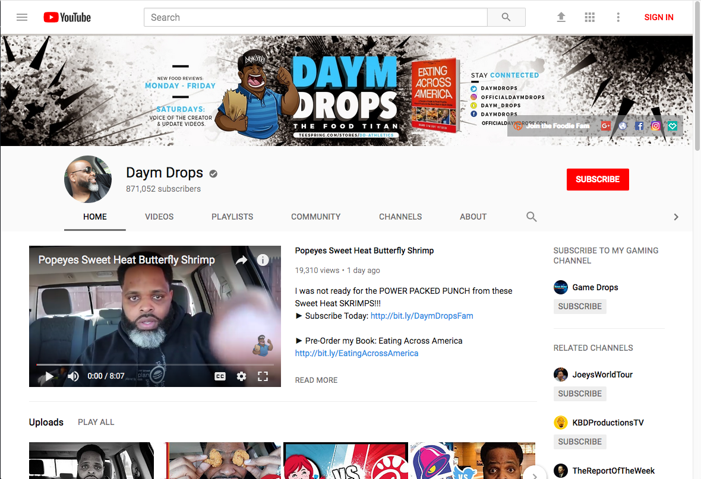
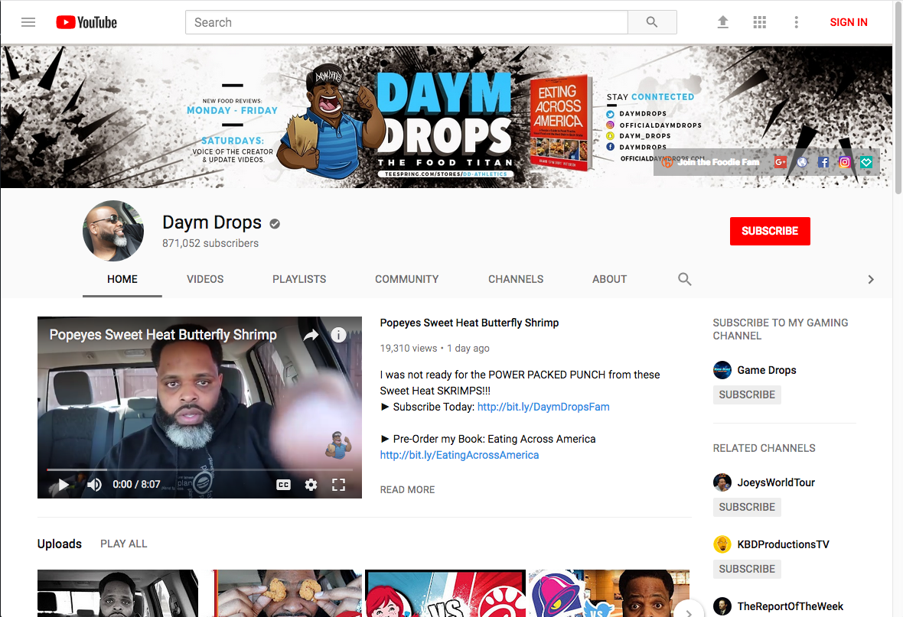
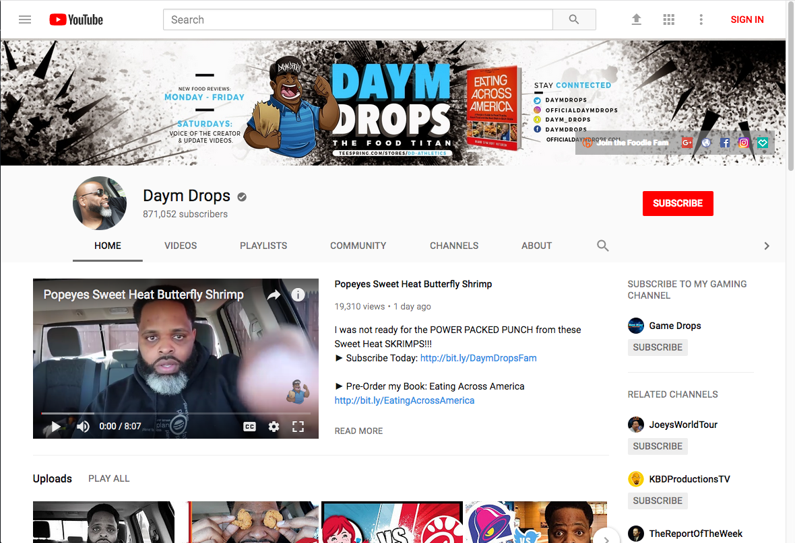
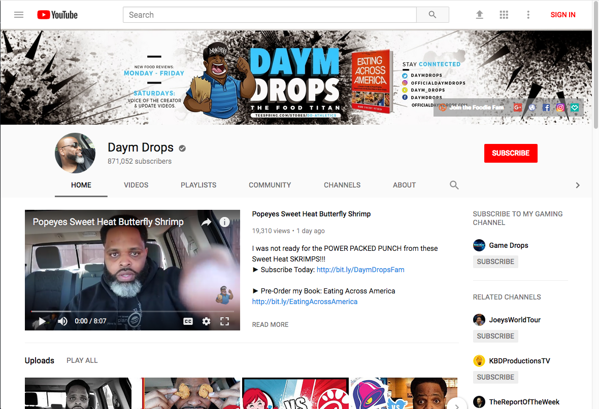
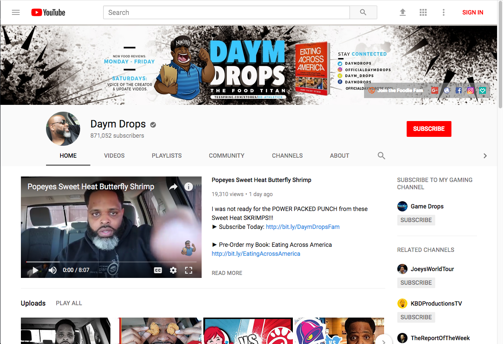
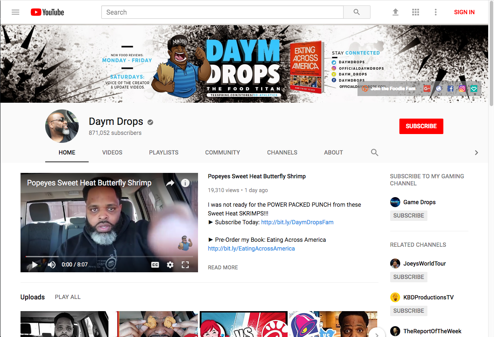

Growing up, I watched an enormous amount of food entertainment that aired on TV. I still watch a ton of food entertainment, but instead I watch these programs on YouTube, where content creators gather and explore the food world. There are channels that critique food, experiment with food, teach cooking techniques, teach recipes, rate kitchen tools, and even show how to take care of your kitchen gear. There are sites dedicated to foodie content creation as well, since Youtube isn’t monetizing smaller content creators with less than 1,000 Subscribers and 4,000 Watch Hours, making it difficult for these content creators in specific. One of those sites, Tasteavision, was created mainly for food critics. (The site was created by Daymon Patterson, a food critic and Youtuber.) Unfortunately, it doesn’t look like much, since the site itself is very plain. The intention behind the channel is something I want to incorporate into my final project, however, because it is more of a site from the public for the public (Drops).
A better designed site, The Food Channel, has a variety of different shows displayed in their “shows” navigation tab. The first thing you see is a banner full of recipes, which you can immediately click and take you to a post for several different recipes describes on said banner. The mouse hovering over that particular section darkens the lower part of the image in the banner, indicating that it can take a user to a linked page. The site’s logo takes you to the home page. There is also a seemingly unlimited amount of “latest” recipes presented on the home page, with a side column of the most popular videos and posts on the left. The form of this website it clean and retains a sort of quaint vibe while at the same time exuding a professional feel to the page. Each edge is beveled, a sign that the site uses border-radius for much of their presentation. It also adjusts extremely well into mobile form, all of the contents stacking in a reasonable fashion, with the nav-menu as a symbolic tab to free up more space for the content. I want to be able to take some of the elements from this form into my own design (Food Channel).
Food is one element that takes on many meanings, since every culture has their own interpretation and etiquette culture that belongs with it. The article, “What Americans can learn from other food cultures,” addresses the notions of food being part of identity, survival, status, pleasure, community, and humanity. I want to be able to delve a bit into these topics since they pertain strongly to culture and diversity. Like everything, food changes and new ways of cooking things come about, and I want to be able to capture that in my final project too. The fact that food can be limited in certain areas and tied to countries is quite eye-opening, since what you can consume tells a lot about people live (Choi).
Choi, Amy S. “What Americans can learn from other food cultures.” Ideas.ted.com, TED Conferences, LLC , 3 Jan. 2016, ideas.ted.com/what-americans-can-learn-from-other-food-cultures/.
Drops, Daym. “Home.” TASTEAVISION, Daymon Patterson, tasteavision.com/.
“Food Channel.” Food Channel, Food Channel, foodchannel.com/.